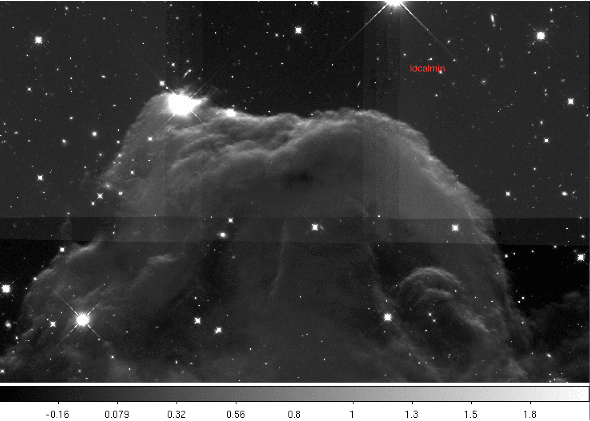

Sky Matching
Contents
Sky Matching#
Introduction#
When a user decided to mosaic several images it can be difficult to decide how to relate the background of one image to the others. AstroDrizzle has the ability to compute and then either subtract or equalize the background in input images in order to match the sky between those images. The function allows users to select the algorithm for the sky subtraction using the skymethod parameter.
There are four methods available in sky matching: ‘localmin’, ‘match’, ‘globalmin’, ‘globalmin+match’.
By applying drizzlepac.sky.sky(), or by applying the skymethod parameter in the call to drizzlepac.astrodrizzle.AstroDrizzle(), AstroDrizzle will update the keyword MDRIZSKY in the headers of the input files.
The recommended use for images with sparse fields that have few astronomical sources is skymethod = localmin and for images with complicated backgrounds, such as nebulae and large host galaxies, skymethod = match is recommended.
For more information on the specifics of this function please refer to the documentation here.
Below, each of the four methods will be demonstrated using a single example dataset, and differences between the methods will be highlighted.
# All imports needed through out this notebook are included at the beginning.
import glob
import os
import shutil
from shutil import copyfile
from astropy.io import fits
from astropy.visualization import astropy_mpl_style
from astroquery.mast import Observations
from ccdproc import ImageFileCollection
from IPython.display import Image
import matplotlib.pyplot as plt
import pandas as pd
import drizzlepac
from drizzlepac import tweakreg
from drizzlepac import tweakback
from stwcs import updatewcs
---------------------------------------------------------------------------
ModuleNotFoundError Traceback (most recent call last)
Cell In [1], line 10
8 from astropy.visualization import astropy_mpl_style
9 from astroquery.mast import Observations
---> 10 from ccdproc import ImageFileCollection
11 from IPython.display import Image
12 import matplotlib.pyplot as plt
ModuleNotFoundError: No module named 'ccdproc'
1. Retrieve Observations using Astroquery#
WFC3/IR observations of the Horsehead Nebula obtained in HST proposal 12812 (PI: Levay) will be used for this demonstration. The images have been processed by the HST WFC3 pipeline (calwf3), which includes bias subtraction, dark current correction, cosmic-ray rejection, and flatfielding.
The alignment specifics for this example are based on the example found here. We will provide explanation about the process as we go.
The code used to retrieve the data from astroquery is below.
# Retrieve the observation information.
obs_table = Observations.query_criteria(proposal_id='12812', filters=["F160W"], project='HST')
obs_table.show_in_notebook()
# Figure out the downloadable products:
dataProductsByObservation = Observations.get_product_list(obs_table)
dataProductsByObservation.show_in_notebook()
# Download the flc.fits files:
obsids = obs_table['obsid']
# Download the data - uncomment to download:
Observations.download_products(obsids, mrp_only=False, productSubGroupDescription=['FLT', 'DRZ'])
Move files to the local directory#
flt_files = glob.glob('mastDownload/*/*/*flt.fits')
for file in flt_files:
im = fits.open(file)
rootname = im[0].header['ROOTNAME']
im.close()
dst = rootname + "_flt.fits"
copyfile(file, dst)
drz_files = glob.glob('mastDownload/*/*/*drz.fits')
for file in drz_files:
im = fits.open(file)
rootname = im[0].header['ROOTNAME']
im.close()
dst = rootname + "_drz.fits"
copyfile(file, dst)
Inspect the image headers#
collect_flt = ImageFileCollection('./', glob_include="*flt.fits", ext=0,
keywords=["asn_id", "detector", "filter", "exptime", "postarg1", "postarg2"])
flt_table = collect_flt.summary
flt_table['exptime'].format = '7.1f'
flt_table['postarg1'].format = '7.2f'
flt_table['postarg2'].format = '7.2f'
flt_table
collect_drz = ImageFileCollection('./', glob_include="*drz.fits", ext=0,
keywords=["asn_id", "detector", "filter", "exptime"])
drz_table = collect_drz.summary
drz_table['exptime'].format = '7.1f'
drz_table
2. Align the visit-level drizzled data#
Exposures obtained within a single HST visit tend to be aligned very well since they use the same guide stars. Thus, we will use TweakReg to align the DRZ files and then use TweakBack to propagate those solutions back to the FLT image headers prior to combining with AstroDrizzle. Making use of the parameter expand_refcat, TweakReg will build up an expanded reference catalog on the sky to be used for alignment. For this dataset, we obtain the best results when we tell TweakReg to align the DRZ files in a specific order, and this is achieved by giving a list of files as input. More details on alignment of HST mosaics can be found in the notebook ‘mosaics.ipynb’ in this repository.
drz.list
ibxl54030_drz.fits <-- Note that tile 54 is the reference and is listed first
ibxl51030_drz.fits
ibxl53030_drz.fits
ibxl55030_drz.fits
ibxl57030_drz.fits
ibxl50030_drz.fits
ibxl52030_drz.fits
ibxl56030_drz.fits
ibxl58030_drz.fits
____ ____ ____
| | | | <-- The 4 tiles with the most overlap are aligned first
| | 55 | |
|____|____|____|
| | | |
| 57 | 54 | 51 |
|____|____|____|
| | | |
| | 53 | |
|____|____|____|
____ ____ ____
| | | | <-- Then the corner tiles are added
| 58 | | 52 |
|____|____|____|
| | | |
| | | |
|____|____|____|
| | | |
| 56 | | 50 |
|____|____|____|
This allows TweakReg to start with the tiles with the most overlap first and then build upon that, expanding the reference catalog as each new tile is aligned.
tweakreg.TweakReg('@drz.list',
imagefindcfg={'threshold': 10, 'conv_width': 4.5, 'peakmin': 1},
minobj=5,
shiftfile=True,
expand_refcat=True,
enforce_user_order=True,
outshifts='shift4_drc.txt',
searchrad=3.0,
ylimit=0.5,
updatehdr=True,
interactive=False)
Tweakback is then run on the aligned DRZ files to propogate the updated WCS information back to the FLT files.
drz_files = glob.glob('i*_drz.fits')
for f in drz_files:
tweakback.tweakback(f, verbose=True)
3. Compare skymethod options in AstroDrizzle#
skymethod = 'localmin'#
When using AstroDrizzle to compute the sky in each frame, ‘localmin’ will compute a common sky for all members of an exposure, as described here. This algorithm is recommended when images are dominated by blank sky instead of extended, diffuse sources.
For a typical use, it will compute sky values for each chip/image extension (marked for sky subtraction in the input parameter) in an input image, and it will subtract the previously found minimum sky value from all chips in that image. This process is repeated for each input image.
In the command below, the aligned FLT frames are sky subtracted and drizzled together. Because the WFC3/IR data products are already cleaned of cosmic rays during calwf3 processing, cosmic-ray rejection is turned off in AstroDrizzle by setting the parameters driz_separate, median, blot, and driz_cr to ‘False’.
drizzlepac.astrodrizzle.AstroDrizzle('*flt.fits',
output='f160w_localmin',
preserve=False,
skymethod='localmin',
driz_separate=False,
median=False,
blot=False,
driz_cr=False,
final_bits='64',
final_wcs=True,
final_rot=257.)
skymethod = 'match'#
When skymethod is set to ‘match’, differences in sky values between images in common sky regions will be computed. Thus, sky values will be relative (delta) to the sky computed in one of the input images whose sky value will be set to and reported as 0. This setting “equalizes” sky values between the images in large mosaics.
This is the recommended setting for images containing diffuse sources (e.g., galaxies, nebulae) covering significant parts of the image.
drizzlepac.astrodrizzle.AstroDrizzle('*flt.fits',
output='f160w_match',
preserve=False,
skymethod='match',
driz_separate=False,
median=False,
blot=False,
driz_cr=False,
final_bits='64',
final_wcs=True,
final_rot=257.)
skymethod = 'globalmin+match'#
When skymethod is set to ‘globalmin+match’, AstroDrizzle will first find a minimum “global” sky value in all input images and then use the ‘match’ method to equalize sky values between images.
drizzlepac.astrodrizzle.AstroDrizzle('*flt.fits',
output='f160w_globalmin_match',
preserve=False,
skymethod='globalmin+match',
driz_separate=False,
median=False,
blot=False,
driz_cr=False,
final_bits='64',
final_wcs=True,
final_rot=257.)
skymethod = 'globalmin'#
When skymethod is set to ‘globalmin’, a common sky value will be computed for all exposures. AstroDrizzle will compute sky values for each chip/image extension, find the minimum sky value from all the exposures, and then subtract that minimum sky value from all chips in all images.
This method may be useful when input images already have matched background values.
drizzlepac.astrodrizzle.AstroDrizzle('*flt.fits',
output='f160w_globalmin',
preserve=False,
skymethod='globalmin',
driz_separate=False,
median=False,
blot=False,
driz_cr=False,
final_bits='64',
final_wcs=True,
final_rot=257.)
4. Compare the MDRIZSKY values for each method#
Below we provide a gif comparing the upper portion of the final drizzled image. We cycle through three of the versions that use different skymethod algorithms:

Below is the code used to compare results from the various skymatching methods. It’s best practice to use more compact for loops when possible in situations like this, but we wanted to write out each file to ensure we are gathering the proper MDRIZSKY values for each skymethod run. We also display a table (Pandas DataFrame) of the different sky matching MDRIZSKY values for comparison.
# This is a quick method of opening our different results and gathering the `MDRIZSKY` values:
im = fits.open("f160w_globalmin_drz_sci.fits")
rootname = im[1].data['ROOTNAME']
asn_id = im[1].data['ASN_ID']
orientat = im[1].data['ORIENTAT']
mdrizsky = im[1].data['MDRIZSKY']
im.close()
im = fits.open("f160w_globalmin_match_drz_sci.fits")
globalmatchrootname = im[1].data['ROOTNAME']
asn_id = im[1].data['ASN_ID']
orientat = im[1].data['ORIENTAT']
globalmatchmdrizsky = im[1].data['MDRIZSKY']
im.close()
im = fits.open("f160w_match_drz_sci.fits")
matchrootname = im[1].data['ROOTNAME']
asn_id = im[1].data['ASN_ID']
orientat = im[1].data['ORIENTAT']
matchmdrizsky = im[1].data['MDRIZSKY']
im.close()
im = fits.open("f160w_localmin_drz_sci.fits")
localrootname = im[1].data['ROOTNAME']
asn_id = im[1].data['ASN_ID']
orientat = im[1].data['ORIENTAT']
localmdrizsky = im[1].data['MDRIZSKY']
im.close()
mdrizsky_val = pd.DataFrame(
{'Rootname': rootname,
'globalmin': mdrizsky,
'globalmin_match': globalmatchmdrizsky,
'match': matchmdrizsky,
'local': localmdrizsky})
mdrizsky_val
These computed sky values can be visualized in the plot below. To reiterate, the MDRIZSKY keyword reports the value subtracted from each image, and not the sky level itself. Thus the values for skymethod='match' are close to zero. We also note that varying background levels across the individual tiles result in inaccurate sky background determination when skymethod='match' and thus a mismatched sky in the final mosaic.
index = mdrizsky_val.index.tolist()
globalmin = list(mdrizsky_val['globalmin'])
globalmin_match = list(mdrizsky_val['globalmin_match'])
match = list(mdrizsky_val['match'])
local = list(mdrizsky_val['local'])
#Plotting code:
fig = plt.figure(figsize=[10,10])
plt.scatter(index, globalmin_match, color='magenta', label='Globalmin + Match')
plt.scatter(index, match, color='navy', label='Match')
plt.scatter(index, local, color='olive', label='Local')
plt.scatter(index, globalmin, color = 'orange', label='Globalmin')
plt.xlabel('Individual Images')
plt.ylabel('MDRIZSKY Value')
plt.legend(loc="center left")
plt.xticks(index)
plt.tight_layout()
5. Display the full ‘matched’ mosaic#
sci = fits.getdata('f160w_match_drz_sci.fits')
fig = plt.figure(figsize=(14, 14))
plt.imshow(sci, vmin=-0.4, vmax=3, cmap='Greys_r', origin='lower')
About this Notebook#
Author: C. Martlin, STScI WFC3 Team
Updated: December, 14 2018